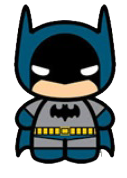

Curriculum vitae de bruce wayne
datos personales
- nombre completo: bruce wayne
- fecha de nacimiento: 1/5/1939
- lugar de nacimiento: gotham city
formación académica
- 1956-1961: Universidad del Espantapájaros
- Licenciatura en aeronáutica
- 1952-1956: Secundaria Gotham
- Bachiller con especialización en trucos
formación académica
- 1975-1985: Desocupado
- Sin trabajo porque se me rompió el batimovil
- 1965-1975: Cazavillanos y demás chusma
- Atrapé a Gatubela, a Joker. A Victor Fries lo dejé porque se me congeló la capa.
- 1962-1965: Aprendiz de superhéroe
- Hice pasantía con Superman. Opté por usar una mascara porque no puede aprender a peinarme el rulo